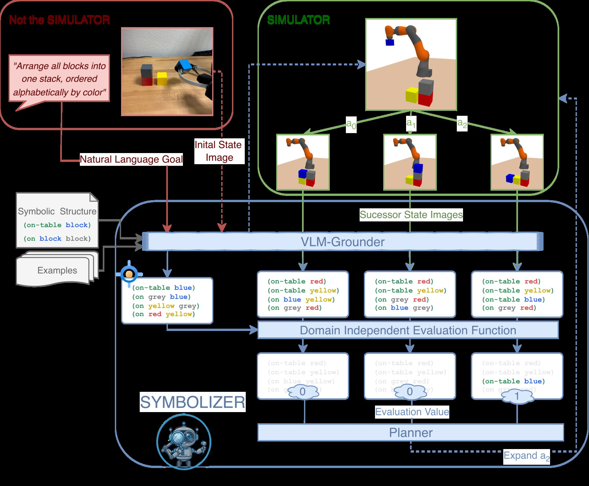
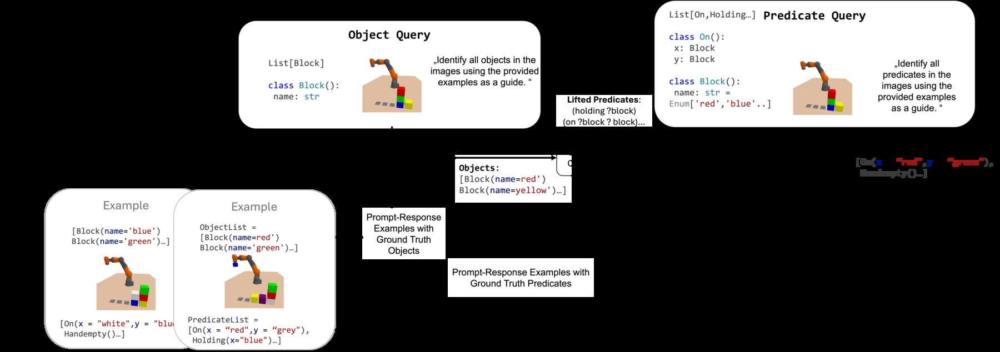
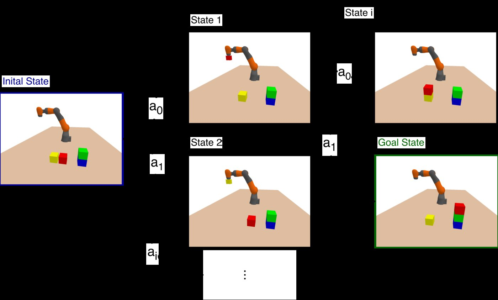

Ground symbols
Measure object, predicate, and goal extraction against ground truth across custom domains and external benchmarks.
Visual grounding · systematic search
SYMBOLIZER grounds images and natural-language goals into structured symbolic representations, then uses systematic search to plan with a simulator as a black-box transition model.
The interactive demo is hosted separately; availability and access requirements may vary.

The problem
Robotic and visual planning settings often provide images or text rather than a ready-made symbolic state and action description. SYMBOLIZER separates the perceptual task of grounding the current situation from the combinatorial task of finding a plan.
Method
Start with an image or textual description and a natural-language goal.
Constrain a vision-language model to produce objects, predicates, and goals in a first-order relational form.
Use the simulator to generate successors and systematically search the induced symbolic state space.


Black-box transitions
The simulator acts as a transition model. SYMBOLIZER can therefore formulate a planning problem from grounded symbols and explore it with classical search, without manually encoding the simulator’s actions or effects.
Supported evaluation
The accompanying paper evaluates object, predicate, and goal grounding alongside planning success across synthetic, rendered, and benchmark settings. See the paper for the complete protocol, tables, and comparisons.
Measure object, predicate, and goal extraction against ground truth across custom domains and external benchmarks.
Evaluate whether grounded representations support valid plans through symbolic search and simulator transitions.
The repository ships input data and scripts for offline planning-table re-execution; live VLM evaluations require configured providers.
Code & reproduction
Install the bundled PDDLGym package and SYMBOLIZER, then re-execute the included symbolic planning tables. Live grounding and some simulator integrations require external credentials or checkouts.
python -m pip install -e ./pddlgym
python -m pip install -e .
python -m experiments.regenerate_all_tables --smokeFor the complete setup, simulator matrix, and live-evaluation recipe, use the repository README and experiments/REGENERATE_TABLES.md.
Paper
Sami Azirar, Zlatan Ajanovic, and Hermann Blum · 2026
Scope & limitations
Grounding quality can limit planning success, and live VLM results may vary between runs. The public code release contains reproduction inputs and scripts, not precomputed result files. Docker-backed runtime checks may require more memory than constrained local hosts provide.